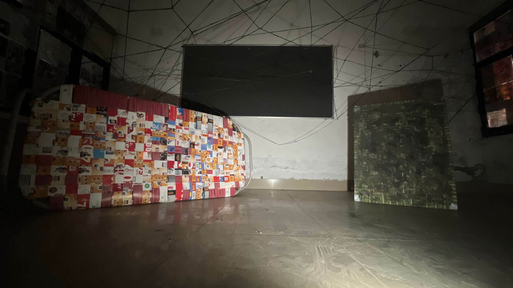
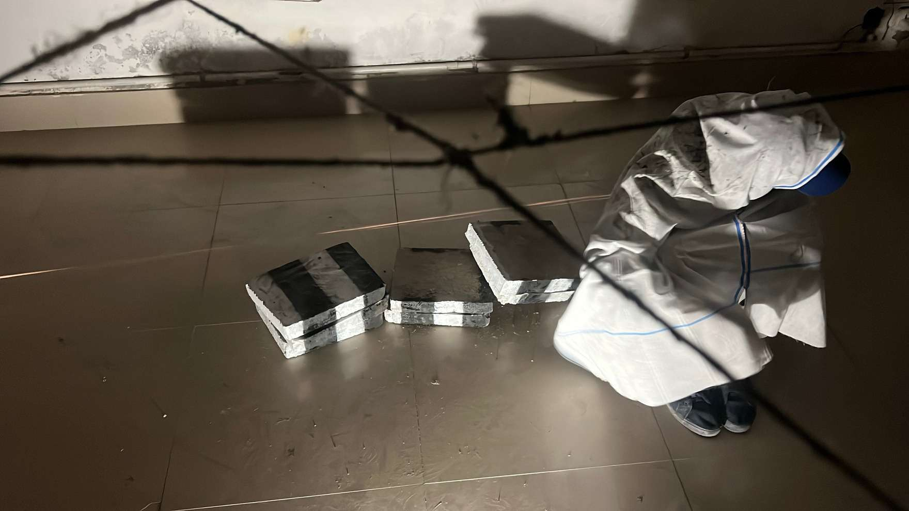
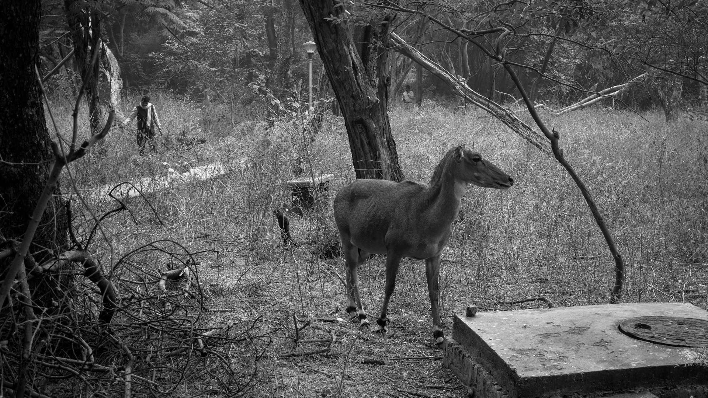
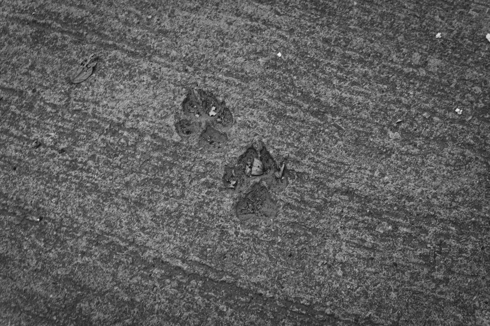
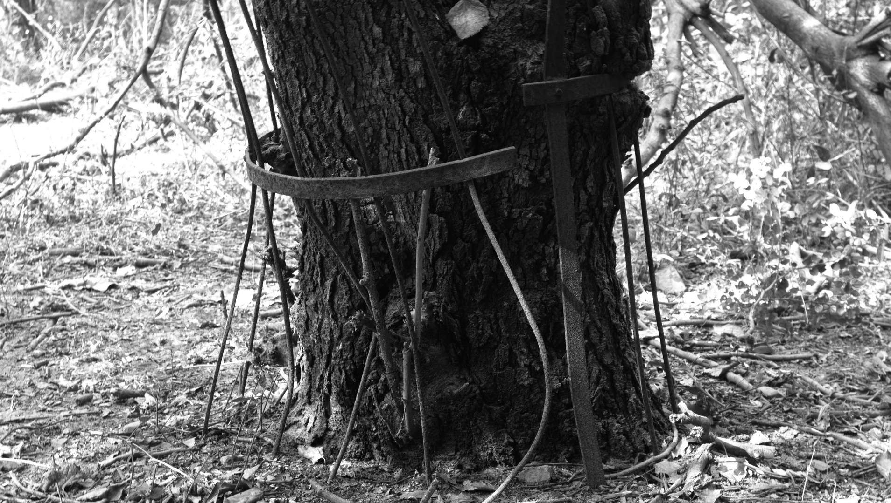
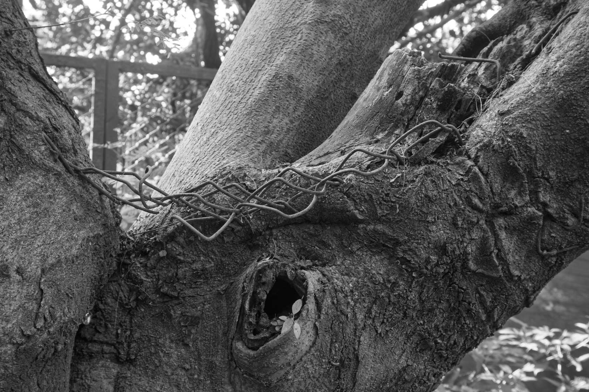

Concept: This work materializes the architectural hostility of New Delhi. The room is stripped of passive observation and converted into a contested zone, forcing the viewer to physically negotiate the barriers, borders, and restrictions that define migrant survival. The city is treated not as a landscape, but as an active force that resists and contaminates the body.
The Spatial Elements:
- The Web: A congested network of tensioned thread, coated in industrial grease and charcoal. It maps the invisible bureaucratic borders of the metropolis, ensuring that any attempt at access results in physical contamination.
- The Barrier: A low barricade of painted concrete blocks. Appropriating the visual authority of police and traffic infrastructure, it acts as a petrified obstruction that strictly dictates movement.
- The Wall Works: Two deconstructed charpais hang as evidence of exhaustion. One is woven from discarded commercial pamphlets, mimicking the visual noise of the urban market. The other is treated as a biological filter, choked with collected city soot, transforming a place of rest into a site of suffocation.
The Performance: Viewers must navigate this restrictive architecture wearing a white gamcha. Functioning as a surrogate skin, the cloth absorbs the grease, dust, and physical friction of the room. The resulting stains are not artistic marks; they are forensic evidence of a body surviving contact with a hostile system.




Concept: This series provides forensic documentation of spatial politics and architectural hostility within New Delhi. The metropolis is confronted as an extractive machine that aggressively filters and restricts organic life. The project captures the contested zones where the unintended citizens of the city—stray animals, displaced cattle, and spontaneous vegetation—are forced into violent, daily negotiations with the concrete infrastructure.
Operating with a sculptural sensitivity to mass and material conflict, the lens isolates moments of extreme physical friction: bodies sustaining themselves on synthetic trash heaps, roots violently contorting against iron grids, and life pushed into the absolute margins of the urban grid.



